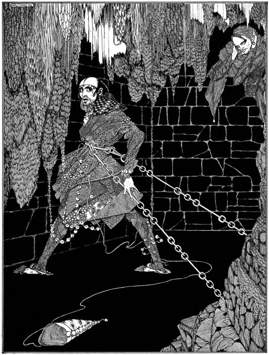

The Cask of Amontillado
1846

THE thousand injuries of I had borne as I best could, but when he ventured upon insult I vowed revenge. You, who so well know the nature of my soul, will not suppose, however, that I gave utterance to a threat. At length I would be avenged; this was a point definitely settled -- but the very definitiveness with which it was resolved precluded the idea of risk. I must not only punish but punish with impunity. A wrong is unredressed when retribution overtakes its redresser. It is equally unredressed when the avenger fails to make himself felt as such to him who has done the wrong.
It must be understood that neither by word nor deed had I given cause to doubt my good will. I continued, as was my wont, to smile in his face, and he did not perceive that my smile now was at the thought of his immolation.
He had a weak point -- this -- although in other regards he was a man to be respected and even feared. He prided himself on his connoisseurship in wine. Few Italians have the true virtuoso spirit. For the most part their enthusiasm is adopted to suit the time and opportunity, to practise imposture upon the British and Austrian millionaires. In painting and gemmary, , like his countrymen, was a quack, but in the matter of old wines he was sincere. In this respect I did not differ from him materially; -- I was skillful in the Italian vintages myself, and bought largely whenever I could.
It was about dusk, one evening during the supreme madness of the carnival season, that I encountered my friend. He accosted me with excessive warmth, for he had been drinking much. The man wore motley. He had on a tight-fitting parti-striped dress, and his head was surmounted by the conical cap and bells. I was so pleased to see him that I thought I should never have done wringing his hand.
I said to him --
said he.
I replied;
Thus speaking, possessed himself of my arm; and putting on a mask of black silk and drawing a roquelaire closely about my person, I suffered him to hurry me to my palazzo.
There were no attendants at home; they had absconded to make merry in honour of the time. I had told them that I should not return until the morning, and had given them explicit orders not to stir from the house. These orders were sufficient, I well knew, to insure their immediate disappearance, one and all, as soon as my back was turned.
I took from their sconces two flambeaux, and giving one to , bowed him through several suites of rooms to the archway that led into the vaults. I passed down a long and winding staircase, requesting him to be cautious as he followed. We came at length to the foot of the descent, and stood together upon the damp ground of the catacombs of the Montresors.
The gait of my friend was unsteady, and the bells upon his cap jingled as he strode.
he said.
said I;
He turned towards me, and looked into my eyes with two filmy orbs that distilled the rheum of intoxication.
he asked, at length.
I replied.
My poor friend found it impossible to reply for many minutes.
he said, at last.
I said, with decision,
he said;
I replied;
Here I knocked off the neck of a bottle which I drew from a long row of its fellows that lay upon the mould.
I said, presenting him the wine.
He raised it to his lips with a leer. He paused and nodded to me familiarly, while his bells jingled.
he said,
He again took my arm, and we proceeded.
he said,
I replied,
he said.
The wine sparkled in his eyes and the bells jingled. My own fancy grew warm with the Medoc. We had passed through long walls of piled skeletons, with casks and puncheons intermingling, into the inmost recesses of the catacombs. I paused again, and this time I made bold to seize by an arm above the elbow.
I said;
he said;
I broke and reached him a flagon of De Grave. He emptied it at a breath. His eyes flashed with a fierce light. He laughed and threw the bottle upwards with a gesticulation I did not understand.
I looked at him in surprise. He repeated the movement -- a grotesque one.
he said.
I replied.
I said;
I replied.
he said,
I answered, producing from beneath the folds of my roquelaire a trowel.
he exclaimed, recoiling a few paces.
I said, replacing the tool beneath the cloak and again offering him my arm. He leaned upon it heavily. We continued our route in search of the . We passed through a range of low arches, descended, passed on, and descending again, arrived at a deep crypt, in which the foulness of the air caused our flambeaux rather to glow than flame.
At the most remote end of the crypt there appeared another less spacious. Its walls had been lined with human remains, piled to the vault overhead, in the fashion of the great catacombs of Paris. Three sides of this interior crypt were still ornamented in this manner. From the fourth side the bones had been thrown down, and lay promiscuously upon the earth, forming at one point a mound of some size. Within the wall thus exposed by the displacing of the bones, we perceived a still interior crypt or recess, in depth about four feet, in width three, in height six or seven. It seemed to have been constructed for no especial use within itself, but formed merely the interval between two of the colossal supports of the roof of the catacombs, and was backed by one of their circumscribing walls of solid granite.
It was in vain that , uplifting his dull torch, endeavoured to pry into the depth of the recess. Its termination the feeble light did not enable us to see.
I said;
interrupted my friend, as he stepped unsteadily forward, while I followed immediately at his heels. In an instant he had reached the extremity of the niche, and finding his progress arrested by the rock, stood stupidly bewildered. A moment more and I had fettered him to the granite. In its surface were two iron staples, distant from each other about two feet, horizontally. From one of these depended a short chain, from the other a padlock. Throwing the links about his waist, it was but the work of a few seconds to secure it. He was too much astounded to resist. Withdrawing the key I stepped back from the recess.
I said,
ejaculated my friend, not yet recovered from his astonishment.
I replied;
As I said these words I busied myself among the pile of bones of which I have before spoken. Throwing them aside, I soon uncovered a quantity of building stone and mortar. With these materials and with the aid of my trowel, I began vigorously to wall up the entrance of the niche.
I had scarcely laid the first tier of the masonry when I discovered that the intoxication of had in a great measure worn off. The earliest indication I had of this was a low moaning cry from the depth of the recess. It was not the cry of a drunken man. There was then a long and obstinate silence. I laid the second tier, and the third, and the fourth; and then I heard the furious vibrations of the chain. The noise lasted for several minutes, during which, that I might hearken to it with the more satisfaction, I ceased my labours and sat down upon the bones. When at last the clanking subsided, I resumed the trowel, and finished without interruption the fifth, the sixth, and the seventh tier. The wall was now nearly upon a level with my breast. I again paused, and holding the flambeaux over the mason-work, threw a few feeble rays upon the figure within.
A succession of loud and shrill screams, bursting suddenly from the throat of the chained form, seemed to thrust me violently back. For a brief moment I hesitated, I trembled. Unsheathing my rapier, I began to grope with it about the recess; but the thought of an instant reassured me. I placed my hand upon the solid fabric of the catacombs, and felt satisfied. I reapproached the wall; I replied to the yells of him who clamoured. I re-echoed, I aided, I surpassed them in volume and in strength. I did this, and the clamourer grew still.
It was now midnight, and my task was drawing to a close. I had completed the eighth, the ninth and the tenth tier. I had finished a portion of the last and the eleventh; there remained but a single stone to be fitted and plastered in. I struggled with its weight; I placed it partially in its destined position. But now there came from out the niche a low laugh that erected the hairs upon my head. It was succeeded by a sad voice, which I had difficulty in recognizing as that of the noble . The voice said--
I said.
I said,
I said,
But to these words I hearkened in vain for a reply. I grew impatient. I called aloud --
No answer. I called again --
No answer still. I thrust a torch through the remaining aperture and let it fall within. There came forth in return only a jingling of the bells. My heart grew sick; it was the dampness of the catacombs that made it so. I hastened to make an end of my labour. I forced the last stone into its position; I plastered it up. Against the new masonry I re-erected the old rampart of bones. For the half of a century no mortal has disturbed them. In pace requiescat!